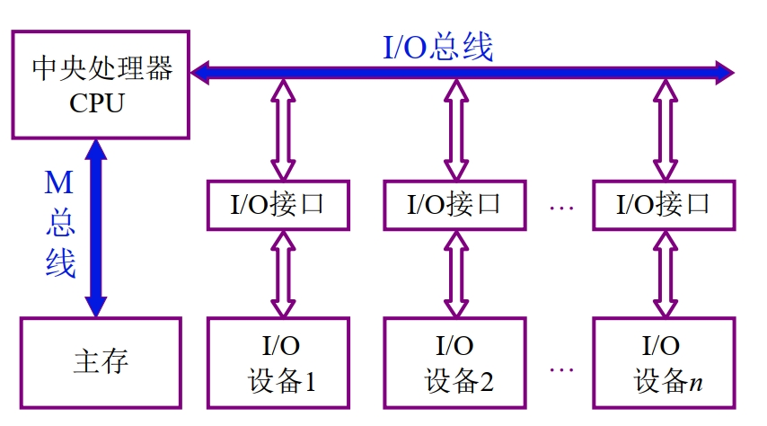
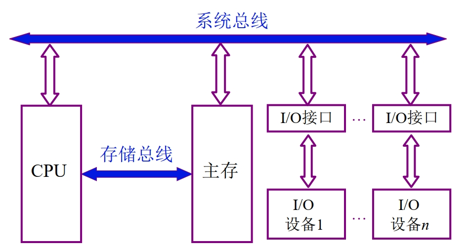
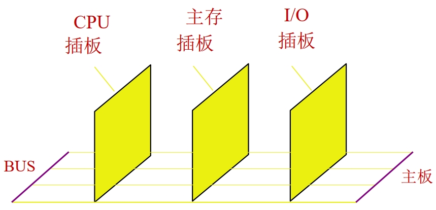

计算机组成原理——总线
总线的基本概念
为什么需要总线
对于计算机体系而言，其有五大部件，需要将五大部件连接起来，如果两两相连，其需要的线很多，也很复杂，而且不利于扩展，并且随着计算机的发展，其部件越来越多，如果还是两两相连，那就很复杂了，因此需要使用总线(bus)。
什么是总线
总线(bus)是连接各个部件的信息传输线，是各个部件共享的传输介质。总线每次只能让一对部件进行使用，其他部件要想使用，只能等使用总线的部件释放总线，这样总线就会成为计算机的瓶颈。
总线上信息的传送
- 串行：发送方一位一位发送，接收方一位一位接收。传输距离远，可以在两台计算机之间进行数据传输。
- 并行：发送方将要传输的数据多位放到总线上，接收方同时多位接收数据，需要多条数据线，当传输距离比较长时，每条线之间的信号会互相干扰，使得接收方接收的数据有问题，因此并行传输距离比较短，可以在计算机机箱内部。
总线结构的计算机
单总线结构示意图

由于只有一条总线，总线每次只能让一对部件进行使用，其他部件要想使用，只能等使用总线的部件释放总线，这样总线就会成为计算机的瓶颈，出现总线的争用，如果设备很多，那么总线会很长，延迟很长。
面向 CPU 的双总线结构示意图

在主存和CPU之间加上了总线。
以存储器为中心的双总线结构示意图

总线的分类
- 片内总线：芯片内部 的总线
- 系统总线：计算机各部件之间的信息传输线
- 数据总线：双向，与机器字长，存储字长有关
- 地址总线：单线，与存储地址，I/O地址有关
- 控制总线：向系统的各个部件传输控制信号，或者各个部件将各自的状态信号传给控制设备，CPU等，方向有出，如：存储器读、存储器写，总线允许、中断确认等信号由CPU发出，也有如信号，如：中断请求、总线请求，由设备发给CPU。
- 通信总线：用于计算机系统之间或计算机系统
与其他系统（如控制仪表、移动通信等）之间的通信- 传输方式：
- 串行通信总线
- 并行通信总线
- 传输方式：
总线特性及性能指标
总线物理实现

参考
本博客所有文章除特别声明外，均采用 CC BY-NC-SA 4.0 许可协议。转载请注明来自 哆啦酱的点心屋！

评论